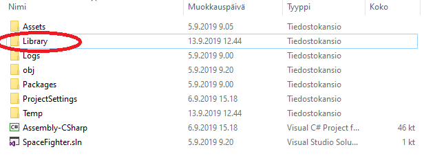

Yleisiä ongelmia
Projektien koko
Projektikansiot ovat n. 50Mt, näistä kuitenkin lähes kaikki on Library-kansiossa. Voit ottaa tämän kansion pois kun otat varmuuskopion tai siirrät projektin muualle. Kun seuraavan kerran avaat projektin niin Library-kansio luodaan uudestaan. Huom: joudut avaamaan Scenen uudestaan.

.gitignore-tiedostoon laitetaan vain yksinkertaisesti näin:
Library
Awake() vs Start()
Molempia metodeja voidaan käyttää hieman samaan tapaan. Näissä alustetaan muuttujia ja tehdään asioita jotka halutaan tapahtuvan ennen kuin objekti näytetään pelaajalle. Lue lisää: docs.unity3d.com.
- Start() -metodia kutsutaan kerran mutta ei varmasti tiedetä missä järjestyksessä eri objektit sitä kutsuvat.
- Awake() tehdään sen jälkeen kun kaikki objektit on alustettu -> toisten GameObjectien kyselyt yms. kannattaa tehdä täällä